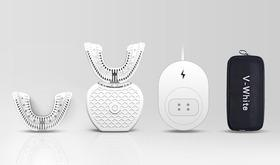

10秒で歯磨きできる V-WHITE+
makuake でパトロンしてた 口にいれて、10秒歯磨き。360度電動歯ブラシ＆ホワイトニング V-WHITE+ が届いた．
中国初のプロジェクトで，日本上陸は初らしい．
V-WHITE TEAM
買ってみた
— tanakaworld 🧢 (@_tanakaworld) July 2, 2018
口にいれて、10秒歯磨き。360度電動歯ブラシ＆ホワイトニング V-WHITE+https://t.co/QoBegXzTRV#Makuake @makuake_caさんから pic.twitter.com/WEaQCPXeY8
なにかと思ったら、昔patronしてた全自動歯ブラシが来てた=͟͟͞͞ ( ꒪౪꒪) pic.twitter.com/Trgr7CIVji
— tanakaworld 🧢 (@_tanakaworld) October 18, 2018
仕様

11,700円コースでパトロンしていた．一般販売価格の 40% OFF なセットで
- V-White+ マウスピース (2)
- V-White+ コアユニット
- 充電器
- トラベルバッグ
が梱包されている．
咥えるとマウスピース型のブラシがほぼ歯に密着する状態になる．超音波式の電動歯ブラシのブラシ部分がマウスピースに変わったようなイメージ．ワイヤレス充電器ということだったので，Qi規格かなにかかと思っていたが，実際はワイヤレスでもなんでもはなかった．金属のポッチが付いていてそれが接触しないと充電されない…バッテリー自体はフル充電で１日２回の使用だと１ヶ月は持つらしい．IP65防水仕様．
実際10秒で歯磨きできるのか
１週間くらい使ってみたところ 歯磨きはできなかった というのが正直な感想．
歯科医推奨の Bass technique で歯を磨きます。リニアモータの採用により、高速振動による強力なクリーニングが可能です。
Bass technique＝バス法？のことだと思うが，歯ブラシを歯と歯茎の間に当てて細かく振動させることによって，歯を磨くというより歯周全体のクリーンにするという方法．
マウスピースがほぼ歯に密着するとはいえ，磨きたい場所全てに触れるわけではない．口の大きさや歯並びは千差万別なので当然の結果ではある．特に奥歯の奥には全く接触しない．初期の V-WHITE と比較すると，比較的密集したブラシ毛が備わったようではあるが，触れている歯や歯茎も磨けているかというと，体感は磨けていなさそう．
到着されております商品ですが、V-Whiteのパッケージにてお届けさせていただいておりますが、内容物についてはV-white+となっております。ご不安をおかけしてしまい大変申し訳ございません。
正直届いたときに間違いかと思ってビックリした（笑）
コンセプトや夢には共感するけど，実用面で今後使い続けていくのは厳しいなぁと感じた．
ホワイトニング
V-WHITE+ で使用されている冷光ホワイトニング技術は、歯がホワイトニングされるプロセスをスピードアップします。さらに、V-WHITEに埋め込まれた冷光ホワイトニング専用の電球は、安全性が高いため、使用者が十代であったとしても問題ありません。このテストはV-WHITE +でホワイトニングした後、VITAスケールを用いて測定した結果は本来より5〜14点ほど高く得られることが証明されています。ホワイトニングした後、本来の黄ばみをどれぐらい取り除いだのが数値が異なりますが、最終的には自然な白さで、光沢のある美しい歯になります。
中国本土では一般的な 冷光ホワイトニング という手法でホワイトニングできるらしい．この新しい技術を世界中に広めたいという説明があったので，歯磨きというよりこっちがメインなのかもしれない．今度使ってみる．